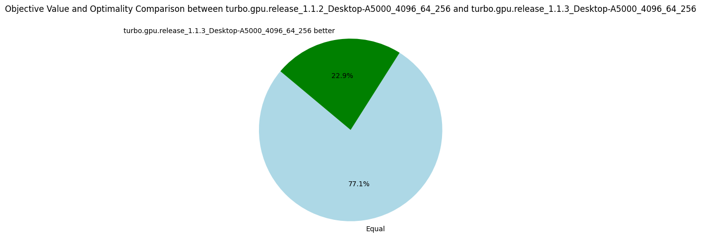

v1.1.3: Warp Synchronization
07 March 2024. We increase by 15% the number of nodes per second by adding a single line of CUDA code. The trick is to synchronize the warps in the fixpoint loop to reunite threads that have diverged.
In Turbo, the propagators are called "refinement operators" and are essentially monotone function over a lattice structure, we will use both terms interchangeably.
For instance, the octagon abstract domain consists of many small refinement operators implementing the Floyd-Warshall shortest path algorithm.
We compute the fixpoint of the refinement operators over the abstract domain a in a fixpoint loop.
For the curious, the loop in version 1.1.2 is implemented as:
for(size_t i = 1; changed[(i-1)%3] && !is_top[(i-1)%3]; ++i) {
size_t n = a.num_refinements();
for (size_t t = group.thread_rank(); t < n; t += group.num_threads()) {
a.refine(t, changed[i%3]);
}
changed[(i+1)%3].dtell_bot(); // reinitialize changed for the next iteration.
is_top[i%3].tell(a.is_top());
is_top[i%3].tell(local::BInc{*stop});
__syncthreads();
}
Depending on the number of available threads (group.num_threads()), the inner loop iterates the propagators array, refining the first N propagators, then the next N, and so on until all propagators have been executed once.
We keep iterating while at least one refinement operator changes a, and we did not reach an inconsistent state (is_top).
The optimization we introduce in v1.1.3 requires a bit of background explanations on CUDA.
Remember that each streaming multiprocessor (SM) is responsible for solving one subproblem (generated by an EPS-like strategy), thus the fixpoint loop is executed on one SM.
Each SM has 64 physical cores (A5000 GPU), so in theory at most 64 propagators are executed in parallel at the same time.
Similarly to CPU multithreading, it is usually more efficient to have more threads than cores in order to hide data transfer latency.
In Turbo, we obtained the best results by quadrupling the number of cores, to obtain 256 threads per SM.
This group of threads is called a block.
The CUDA scheduler is scheduling groups of 32 threads called warps instead of scheduling individual threads.
A block of 256 threads is thus made of 8 warps, and due to the number of cores, there are only 2 warps at any moment that are executed together.
When talking about GPU, it is common to hear that the GPU "can only execute in parallel the same instructions with different data" (SIMD parallelism).
But this is only true at the level of a warp, for 32 threads.
Two warps can execute completely different instructions without any penalty.
Now, let's look at what happens if two threads within a warp execute two different instructions.
Suppose if c then P else Q such that the condition is true for 5 threads and false for 27 threads, then the warp is split into two parts and each part is executed sequentially.
For the propagators, it happens quite often that 32 successive propagators are not exactly the same.
For instance, x + y <= k and x - y <= k would cause divergence due to the different arithmetic operators.
Even worst is x * y <= k and x * z <= k that can diverge due to interval multiplication which is not the same depending on the signs of the intervals' bounds.
In recent versions of CUDA, once threads have diverged, they are not merged back automatically.
It is only when encountering a barrier such as __syncthreads() that they are put back together.
The optimization in version 1.1.3 is to synchronize the threads of each warp (__syncwarp()) after each iteration of the inner loop:
for (size_t t = group.thread_rank(); t < n; t += group.num_threads()) {
a.refine(t, changed[i%3]);
if((t-group.thread_rank()) + group.num_threads() < n) __syncwarp();
}
It leads to better parallelism since at each iteration we start with the full warp of 32 threads and not a warp already split by a previous iteration.
The results show the efficiency of this approach.
Interestingly, it also shows that we need more iterations to reach the fixpoint, which might be due to the fact that the propagators are running in a different order due to __syncwarp().
| Metrics | Average | Δ v1.1.2 | Median | Δ v1.1.2 |
|---|---|---|---|---|
| Nodes per seconds | 4328.83 | +15% | 1240.06 | +18% |
| Fixpoint iterations per second | 21347.57 | +26% | 6519.14 | +69% |
| Fixpoint iterations per node | 8.60 | +17% | 5.31 | +3% |
| #Problems with IDLE SMs at timeout | 9 | 8 | ||
| Propagators memory | 9.01MB | 0% | 8.08MB | 0% |
| Variables store memory | 72.29KB | 0% | 84.10KB | 0% |
| #Problems at optimality | 11 | 11 | ||
| #Problems satisfiable | 22 | 22 | ||
| #Problems unknown | 2 | 2 | ||
| #Problem with store in shared memory | 10 | 10 | ||
| #Problem with prop in shared memory | 1 | 1 |
There are many possible optimizations to improve the efficiency of the fixpoint loop, in particular to avoid thread divergence. I'm going next to try something very simple: to sort the propagators according to their structures, which should reduce divergence, we'll see!
The following pie charts show that the version v1.1.3 is strictly better than all others before, which validate the usefulness of our optimizations.
